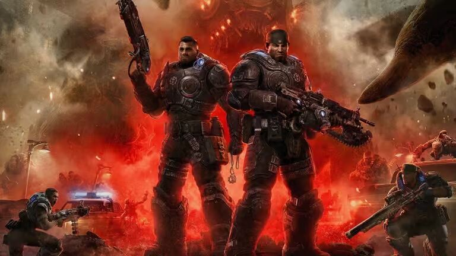

The Video Games
Mainline titles like Gears of War 1 through 3 follow Delta Squad fighting the Locust Horde and Lambent, while Gears of War 4 and Gears 5 follow the next generation against the Swarm.
Explore Game Franchise →The narrative landscape of Gears of War is not confined to games alone. Long before Marcus Fenix was pulled out of the Jacinto Maximum Security Penitentiary, humanity on the planet Sera tore itself apart during the Pendulum Wars for control of the fuel source known as Imulsion.
Six weeks after peace was signed, humanity faced extinction when subterranean horrors emerged worldwide on Emergence Day (E-Day). The upcoming prequel entry, Gears of War: E-Day, focuses directly on Marcus Fenix and Dominic Santiago facing this first terrifying night, linking the canonical lore between the early novels and the original 2006 title.

Understanding the full narrative requires exploring how three primary mediums work together in official continuity:
Mainline titles like Gears of War 1 through 3 follow Delta Squad fighting the Locust Horde and Lambent, while Gears of War 4 and Gears 5 follow the next generation against the Swarm.
Explore Game Franchise →Karen Traviss crafted five essential volumes (Aspho Fields, Jacinto's Remnant, Anvil Gate, Coalition's End, The Slab), expanded further by Jason M. Hough (Ascendance, Bloodlines) and Michael A. Stackpole (Ephyra Rising).
Read Novel Summaries →Published by DC/Wildstorm and IDW, graphic arcs like Hollow, The Rise of RAAM, and Hivebusters bridge critical backstory and front-line combat perspectives.
View Comic Continuity →Below is the historical progression of canonical conflicts in chronological in-universe order:
A global war of attrition between the Coalition of Ordered Governments (COG) and the Union of Independent Republics (UIR), chronicled in flashbacks across Karen Traviss's Aspho Fields and The Slab.
Beginning with Emergence Day, humanity is driven to the Jacinto plateau. Delta Squad fights through Gears of War, confronts the Locust subterranean capital in Gears of War 2, flees into exile during Jacinto's Remnant, Anvil Gate, and Coalition's End, and unleashes the Imulsion countermeasure in Gears of War 3.
Michael A. Stackpole's Ephyra Rising charts the fragile postwar reconstruction. Decades later, Gears of War 4, Jason M. Hough's Ascendance and Bloodlines, and Gears 5 follow Kait Diaz and JD Fenix against the reemerging Swarm.
Follow this complete chronological sequence to experience the full cross-media story in historical Sera timeline order: